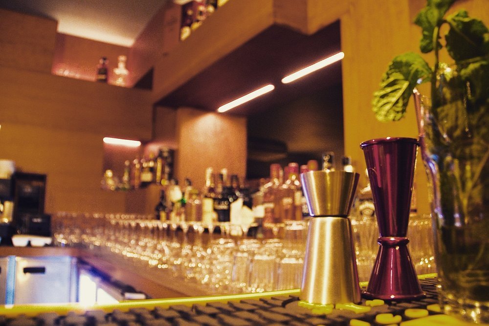
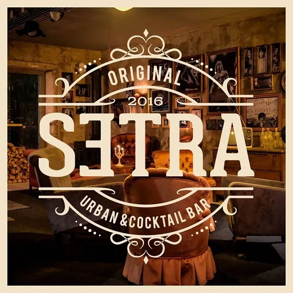
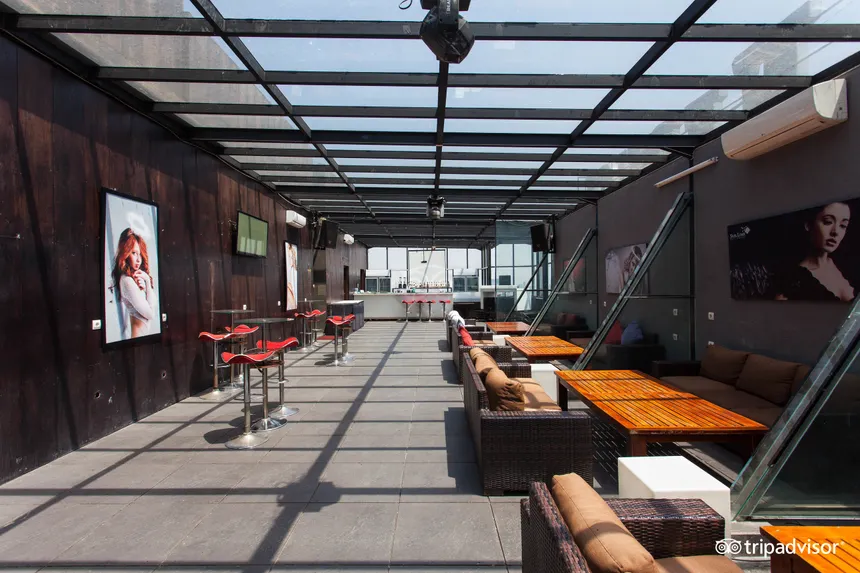

Nightlife in Braga
Discover vibrant student bars, late-night clubs, and craft beer spots in Portugal's youngest city.

Must ExperienceTosga
Tosga is a highly rated cocktail bar and pub located in the historic center of Braga, Portugal, directly next to the Braga Cathedral.
- Rua Dom Paio Mendes (Sé)
- Craft cocktails & shots

Student FavoriteSETRA Urban & Cocktail Bar
Highly-rated nightlife venue located in the historical center of Braga, Portugal, known for its multi-level layout and music-themed decor.
- Rua de São João (City Center)
- Multi-level venue & DJs

Rooftop ViewsSky Braga
A rooftop bar and nightlife venue in Braga, Portugal, located at Avenida São Martinho in the Nogueiró area. Known for panoramic views over the city, drinks, and appetizers.
- Av. São Martinho, Nogueiró
- Panoramic city views & drinks
Erasmus Nightlife Tip
Nightlife in Portugal starts late! Pre-drinks at bars like Tosga or SETRA usually start around 22:30 before moving to rooftop spots like Sky Braga. Also, don't miss Wednesdays (Quarta Académica), which is the main student party night of the week.